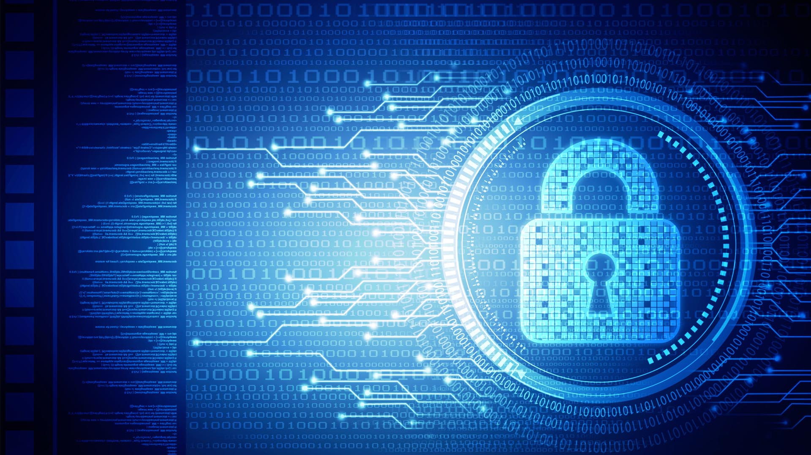

la cybersecurity
LA CYBERSECURITY
Indice
Che cos'è la cybersecurity

- La cybersecurity si riferisce a qualsiasi tecnologia per prevenire gli attacchi informatici o ridurne l'impatto. Il suo scopo è quello di proteggere i sistemi informatici, i dispositivi e i dati da malware o da minacce informatiche.
- L'obiettivo è garantire la confidenzialità, l'integrità e la disponibilità delle informazioni digitali, oltre a prevenire i danni e assicurare la continuità delle attività aziendali e personali online.
Perchè è importante
- La cybersecurity è importante perché gli attacchi informatici e il crimine informatico riescono a danneggiare o distruggere intere aziende o comunità.
- Gli attacchi informatici riusciti portano a furti di identità, estorsioni personali e aziendali, perdita di informazioni sensibili, interruzioni dell'attività, perdita di affari e clienti e nei casi più gravi alla chiusura dell'attività.
Gli attacchi informatici hanno un impatto enorme e crescente sulle aziende e sull'economia, poichè i criminali informatici diventano sempre più sofisticati e quindi il costo degli attacchi informatici aumenta.
Come può essere migliorata
A casa
- Per poter proteggere i nostri dispositivi di tutti i giorni è possibile:
- - aggiornare regolarmente le password
- - aggiornare regolamente i software e i firmware
- - scaricare software solo da fonti affidabili
- - non aprire e-mail o file sospetti
In azienda
- Per poter proteggere meglio i dati della nostra azienda, invece, è possibile:
- - far fare al personale una continua formazione per restare sempre aggiornati sui nuovi sviluppi riguardo la cybersecurity e gli attacchi hacker
- - implementare il sistema di difera usando un approccio multi-livello
- - controllare chi, con apposite credenziali, può accedere a che cosa
- - fare backup periodici
Per maggiori informazioni riguardo l'argomento andare a visitare la sitografia